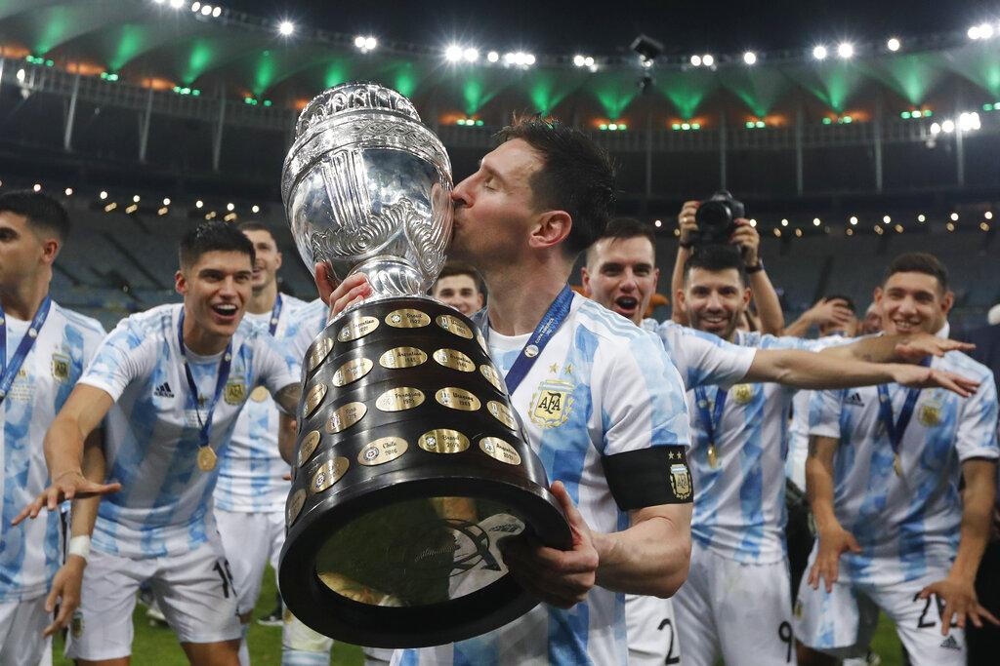

Neymar Jr
Neymar, in full Neymar da Silva Santos, Jr., (born February 5, 1992, Mogi das Cruzes, Brazil), Brazilian football (soccer) player .

Lionel Messi
Lionel Messi, in full Lionel Andrés Messi, also called Leo Messi, (born June 24, 1987, Rosario, Argentina), Argentine-born football player.

Cristiano Ronaldo
Cristiano Ronaldo, in full Cristiano Ronaldo dos Santos Aveiro, (born February 5, 1985, Funchal, Madeira, Portugal), Portuguese footballer.

Mesut Ozil
Mesut Özil (German pronunciation: [ˈmeːzut ˈøːzil], Turkish: [meˈsut œˈzil]; born 15 October 1988) is a German professional footballer.

Paulo Dybala
Paulo Exequiel Dybala (born 15 November 1993) is an Argentine professional footballer

Di Maria
Ángel Fabián Di María (born 14 February 1988) is an Argentine professional footballer .

Mauro Icardi
Mauro Emanuel Icardi (Spanish pronunciation: [ˈmawɾo emaˈnwel iˈkaɾði]; born 19 February 1993) is an Argentine professional footballer.

Kylian Mbappé
Kylian Mbappé Lottin (born 20 December 1998) is a French professional footballer.

Mohamed Salah
Mohamed Salah Hs an Egyptian professional footballer who plays as a forward for Premier League club Liverpool.
Upcomming Tournament
Tournament-1
Place: Dhaka , Bangladesh
6.00 A.MTournament-2
Place: India
9.00 A.MTournament-3
Place: Germany
4.00 P.MCopa America Winner

Argentina won their first major title in 28 years on Saturday when an Angel Di Maria goal gave them a 1-0 win over Brazil and a record-equalling 15th Copa America.
Di Maria got the winner midway through the first half when he lobbed Ederson after full back Renan Lodi failed to cut out a long through ball.
Argentina's win was a particular triumph for Barcelona striker Lionel Messi, who picked up his first ever title in a blue and white shirt after more than a decade of club and individual honours.
Messi, who missed a golden chance to score with two minutes remaining, finished the tournament's joint top goalscorer with four goals and was elected joint best player along with Neymar.
Argentina won their first major title in 28 years on Saturday when an Angel Di Maria goal gave them a 1-0 win over Brazil and a record-equalling 15th Copa America. Di Maria got the winner midway through the first half when he lobbed Ederson after full back Renan Lodi failed to cut out a long through ball. Argentina's win was a particular triumph for Barcelona striker Lionel Messi, who picked up his first ever title in a blue and white shirt after more than a decade of club and individual honours. Messi, who missed a golden chance to score with two minutes remaining, finished the tournament's joint top goalscorer with four goals and was elected joint best player along with Neymar.